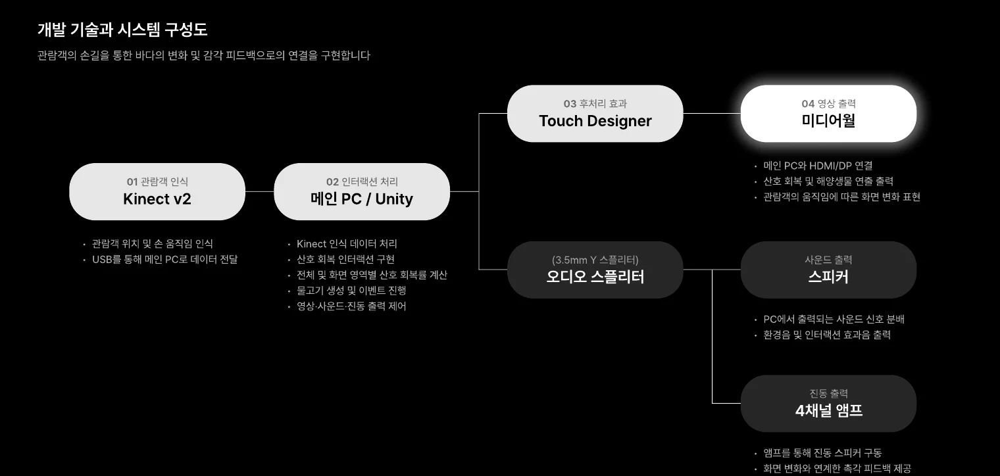
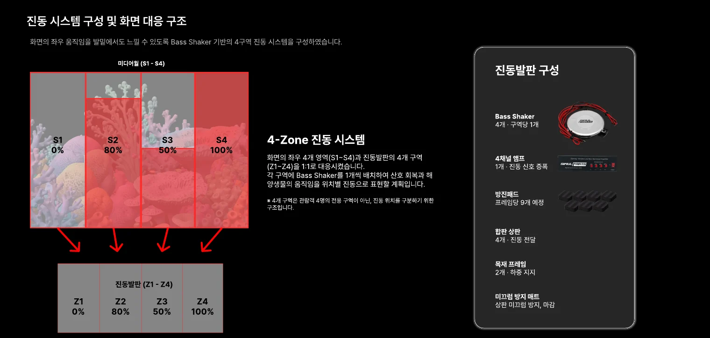
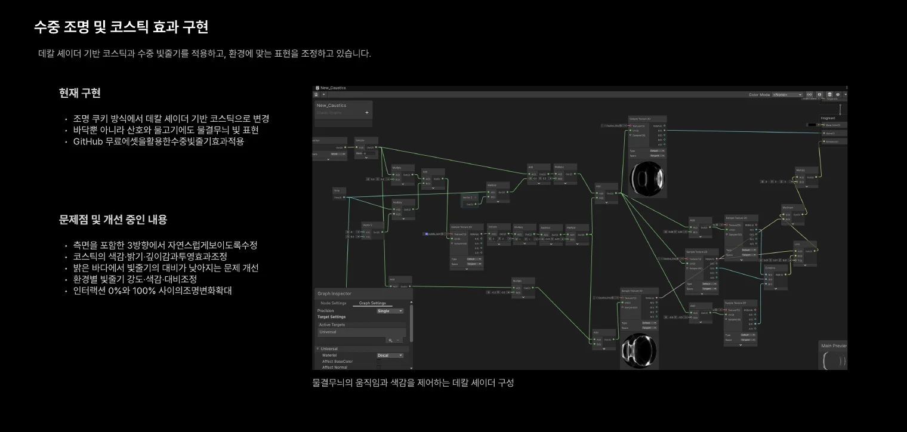
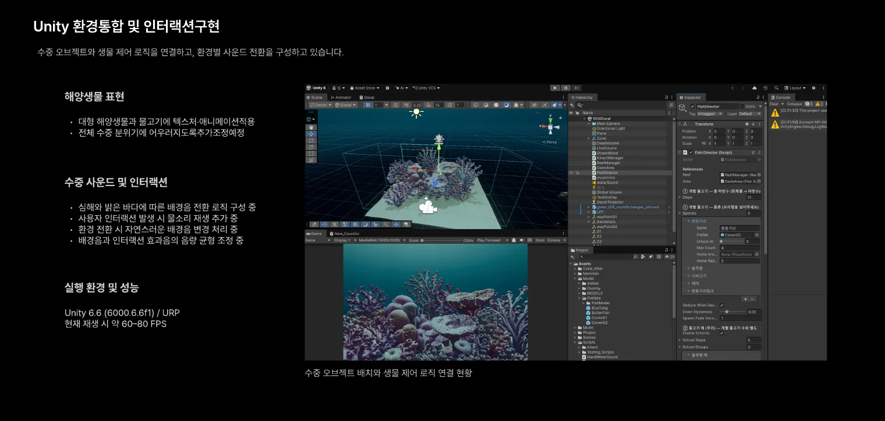
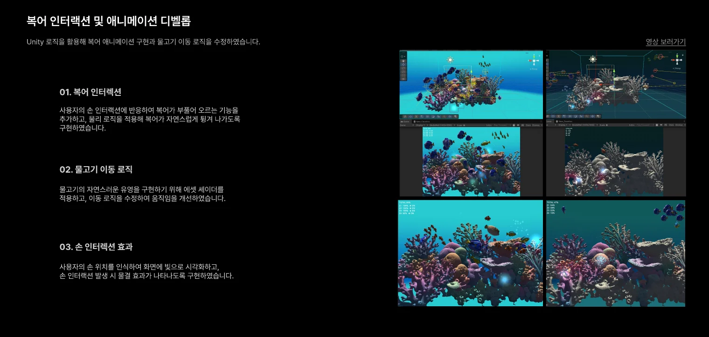

Kinect v2
위치와 손 움직임 인식
 공명체
공명체센서와 실시간 그래픽, 사운드와 진동을 연결해 관람객의 참여가 바다의 반응이 되도록 구현합니다.
제작 과정 살펴보기 ↓Kinect가 읽은 움직임을 Unity에서 처리하고, 산호의 회복률을 화면·사운드·진동으로 연결하는 시스템을 구성합니다.
위치와 손 움직임 인식
회복률 · 생물 · 이벤트 제어
미디어월 · 스피커 · 4구역 발판

크게 보기 ↗손이 지나간 위치를 중심으로 20 × 20cm 범위의 산호가 회복됩니다. 양손과 최대 4인 참여를 고려했습니다.
같은 위치에 손을 유지하면 2초마다 회복 반경이 10cm씩 넓어집니다. 손이 닿기 어려운 화면 상단과 하단은 인접 영역이 회복될 때 함께 보정합니다.
새로운 회복이 3초간 없으면 백화를 시작하고, 2초마다 현재 회복률의 10%씩 줄이도록 설계했습니다.
미디어월 전시의 설계 규칙입니다. 이 웹사이트의 마우스 체험은 전시 감각을 전달하는 별도 프로토타입입니다.
S1 → Z1
S2 → Z2
S3 → Z3
S4 → Z4
화면의 좌우 4개 영역과 진동발판의 4구역을 1:1로 대응시켰습니다. 구역별 회복률과 생물의 이동에 따라 위치별 진동을 전달하는 구조입니다.
PC의 오디오 신호를 스피커와 4채널 앰프로 나눕니다. 각 구역의 진동 스피커가 화면 반응을 발밑으로 전달합니다.
거대 해양생물이 화면 오른쪽에서 왼쪽으로 이동할 때 진동도 Z4에서 Z1로 순서대로 이동합니다. 진동발판 제작 과정 ↗

크게 보기 ↗복어는 손이 닿으면 팽창하며, 다른 물고기는 이동 로직에 따라 유영합니다. 장면에 맞춰 환경음과 반응 효과음을 나누고, 배경이 바뀔 때 소리도 함께 전환합니다.

크게 보기 ↗
크게 보기 ↗
크게 보기 ↗미디어월과 진동발판을 연결했습니다. 결합부 잡음, 손 인터랙션 사운드 끊김, 물고기 텍스처 오류를 확인했습니다.
과도한 빛과 장면 혼잡을 줄이고, 생물 머터리얼과 산호 질감을 점검하며 화면을 정돈했습니다.
색감 중첩으로 탁해지는 현상을 별도 씬에서 재검토하고 있습니다. 일부 사운드를 적용했으며 환경음·효과음과 에셋 조화를 계속 조정합니다.